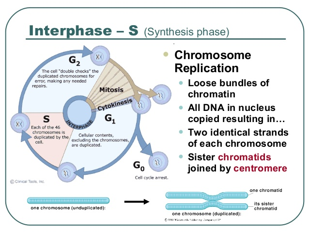
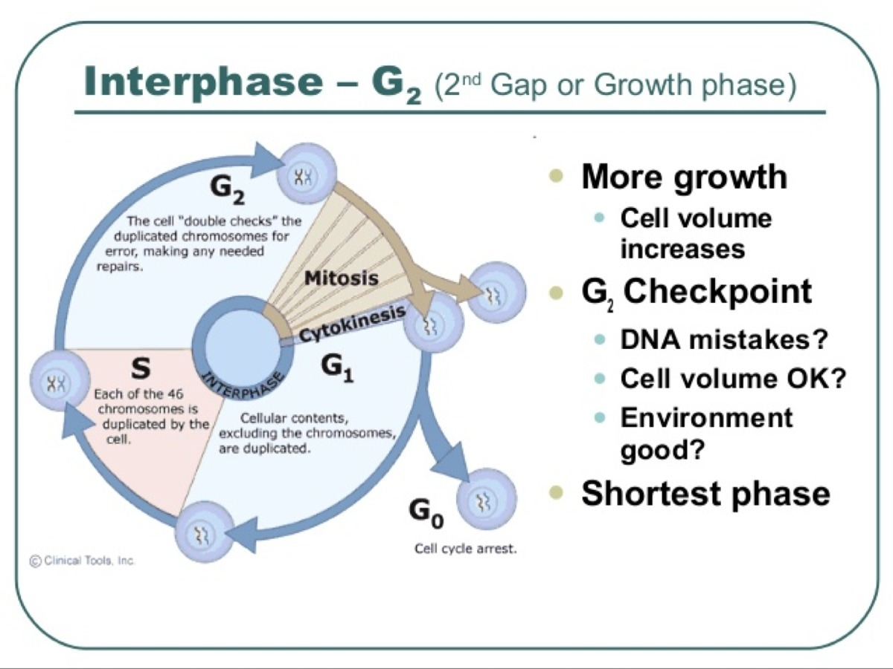

S phase

In S phase, the cell synthesizes a complete copy of the DNA in its nucleus. It also duplicates a microtubule-organizing structure called the centrosome. The centrosomes help separate DNA during M phase.
G2 phase

During the second gap phase, or G2. phase, the cell grows more, makes proteins and organelles, and begins to reorganize its contents in preparation for mitosis. G2. phase ends when mitosis begins.